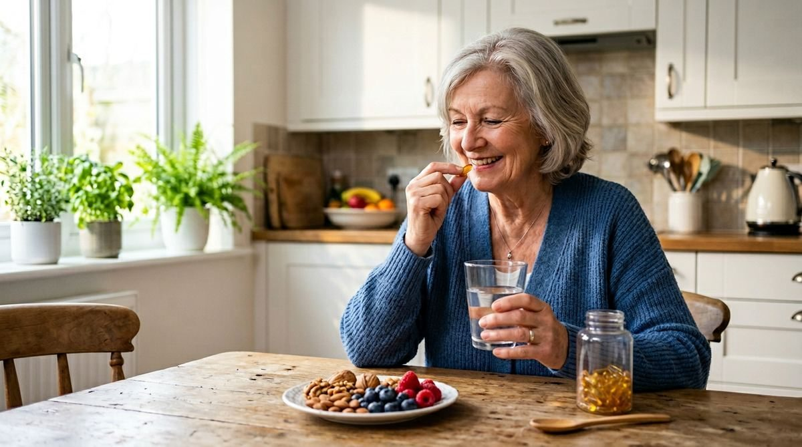
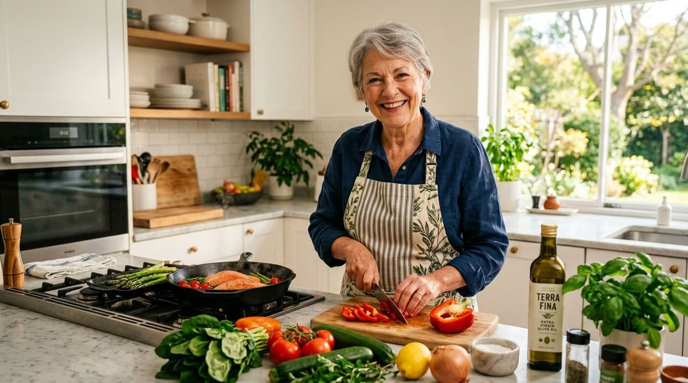

Nos conseils
Un guide complet et des conseils santé pour accompagner les seniors et leurs proches dans le maintien de l'autonomie, du confort et du bien-être à domicile.
Un guide complet et des conseils santé pour accompagner les seniors et leurs proches dans le maintien de l'autonomie, du confort et du bien-être à domicile.
Ressource gratuite
Un guide pratique conçu pour aider les seniors et leurs proches à maintenir autonomie, confort et bien-être tout en restant à domicile.
Le guide met l'accent sur la préparation et la bienveillance pour vieillir chez soi dans de bonnes conditions. Il encourage à voir le vieillissement comme une nouvelle étape de vie, riche de sens et non comme une contrainte. L'objectif est de rester acteur de sa vie, entouré et soutenu.
Santé & Vitalité
Avec l'âge, l'alimentation joue un rôle clé dans le maintien de la vitalité et la prévention des troubles chroniques.
Les acides gras essentiels Oméga-3 et Oméga-6 sont indispensables au bon fonctionnement de l'organisme. Cependant, l'équilibre entre les deux est fondamental : trop d'Oméga-6 et pas assez d'Oméga-3 favorisent l'inflammation silencieuse.
Les Oméga-3, présents dans les poissons gras, les noix ou l'huile de colza, soutiennent le cœur et le cerveau. Les Oméga-6, que l'on retrouve surtout dans les huiles végétales raffinées, restent nécessaires mais en quantité modérée.
Un rapport équilibré Oméga-6 / Oméga-3 contribue à fluidifier les membranes cellulaires. Des cellules plus souples échangent mieux les nutriments et l'oxygène. Cet assouplissement cellulaire facilite aussi l'absorption des vitamines et minéraux.
Chez les séniors, il favorise une meilleure mémoire, une concentration plus stable et un sommeil réparateur. Il contribue aussi à maintenir une bonne santé cardiovasculaire, à préserver la masse musculaire, l'énergie au quotidien et à renforcer les défenses immunitaires — élément crucial après 60 ans.
En résumé, prendre soin de l'équilibre Oméga-3 / Oméga-6, c'est optimiser toutes les autres actions nutritionnelles et compléments.
des personnes testées ont un ratio
au-delà de 15:1
L'équilibre idéal est de 3:1

Test sanguin
Voulez-vous savoir ce que vous ne savez pas sur votre équilibre alimentaire ?
Avec le test ZINZINO, vous allez connaître précisément votre équilibre Oméga-3 / Oméga-6. L'équilibre parfait est de 3:1.
Aujourd'hui nous sommes passés d'une nutrition basée sur des suppositions à une nutrition basée sur des tests sanguins.
Contactez-nous pour en savoir plus
Nos solutions
Monte-escalier, douche sécurisée, aménagements du logement : nous vous accompagnons à Épinal et dans les Vosges, avec étude gratuite et devis sans engagement.